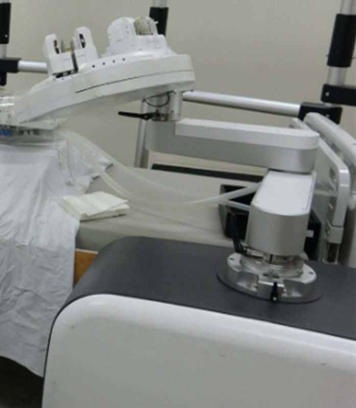

Commercial and clinical-stage systems · asan_choi2021
Asan PCI robot
Asan Medical Center modular bi-motional roller-cartridge PCI robot

1 / 9


- Family
- Commercial and clinical-stage systems (clinical-stage)
- Devices
- three modules drive a guiding catheter, a guidewire and a balloon catheter (Sec. 2.1.2, p. 3), 3 devices at once; the clamping also fits guide extensions and IVUS catheters (p. 2); bench devices 5 F catheter, 0.014-in guidewire, 3.5 x 15 mm balloon (p. 10); in vivo only the guidewire was robot-driven (p. 13-16)
- Degrees of freedom
- 8 by our sum (paper gives no total): guiding-catheter and guidewire modules 3-DOF each (clamp, translate, rotate), balloon module 2-DOF (choi2021_vascular Sec. 2.1.2, p. 3)
- Push
- Friction rollers
- Twist
- Rotating clamp
- Tested up to
- Human
- Sim-to-real
- None found — No simulation-trained controller found for this robot.
Testing
- Highest level
- Human
- What was tested
- bench: 20 cartridge-gap trials, 10 repetitions per translation length and per 360-degree rotation; phantom: EVE silicone model, trial count N.R.; animal: one 60 kg pig, robot-driven guidewire into the RCA; clinical: 2 patients (coronary angiography), robot-driven guidewire to the LAD and the RCA, both technically successful; MFDS approval 20190064902 (choi2021_vascular p. 9-16)
- Key numbers
- translation mean error: guiding catheter -0.93 to 0.75 mm, guidewire 0.11-0.86 mm, balloon 0.07-0.57 mm (Table 1); rotation error at 360 degrees: guiding catheter 3.29 +- 5.48, guidewire 1.93 +- 2.50 degrees (Table 2) (choi2021_vascular)
Mechanism
- Push (translation)
- friction-roller (tightly pressed roller pairs, 20 mm rollers driven through bevel gears) (choi2021_vascular Sec. 2.1.1, p. 2-3)
- Twist (rotation)
- Roller pair rubs the device: a motor, bevel gear and ball screw raise the cartridge frame; limited range of about 900-1800 degrees from a 25 mm vertical displacement (Sec. 2.3.2, p. 7); clamping by motor, timing belt and bidirectional ball screw (p. 4)
- Device range
- accommodates instruments of various sizes via the active clamping mechanism; rotation range about 900-1800 degrees per cartridge stroke (p. 7); translation stroke and speeds N.R.
- Target anatomy
- coronary (PCI)
Sensing and interface
- Force sensing
- none: no force sensor; the haptic cue is a virtual wall near the cartridge rotation limit, computed from cartridge position (choi2021_vascular Discussion, p. 17)
- Leader and haptics
- master: 3-RRR planar parallel mechanism + linear actuator ('clutch-like trigger') + spherical wrist mechanism, called a 6-DOF mechanism (Sec. 2.1.3, p. 4-5; p. 17), Maxon DC motors; force feedback used only as a virtual wall
- Imaging
- real-time fluoroscopy on the console monitors; physician behind radiation-shielded glass (choi2021_vascular p. 5, Fig. 17b)
- Sterility
- roller cartridge designed as a disposable part (p. 4); sterile drapes and detachable sterilised rollers form the sterile interface, no closed housing (p. 15, 17)
Size
- Footprint (mm)
- N.R.
- Mass (kg)
- N.R.
Simulation
- Simulation model
- none found
- Sim-trained controller
- none found
Versions
- Lineage
- choi2021_vascular (Biosensors 2021); 2017-18: Asan (J. Choi) EP platform driving a commercial ablation (steerable) catheter with rolling belts, leader with a 3-RRR planar manipulator (Moon 2018), ex vivo phantom (Hu 2017) (Alekseeva 2025 Table 3 row 7, Fig. 8f; Belikov 2024 Fig. 5 HU1) (alekseeva2025_design; belikov2024_evolution); 2020-21: Asan (J. Choi, Y.-H. Kim) cardiac-ablation catheter robot: dual-gripper front module inserts and rotates the catheter without slip, handle module turns the bending knob, Jacobian updated from two position sensors on the catheter (Lee 2021 J. Mech. Robot. 13, doi:10.1115/1.4048224) (Belikov 2024 Fig. 5 LE) (lee2021_design; belikov2024_evolution); 2021: deep RL (Rainbow) guidewire navigation trained and tested on the physical 2-D and 3-D coronary phantoms with an Asan robotic module whose opposed roller pair advances the wire and whose vertical roller shift rotates it, step 0.4 mm or 33 deg (Kweon 2021 IEEE Access; Konda 2025 control row 33); real-world training, not sim-to-real (kweon2021_deep; konda2025_robotically)
Sources
- A Vascular Intervention Assist Device Using Bi-Motional Roller Cartridge Structure and Clinical Evaluation · Biosensors, 2021 · doi:10.3390/bios11090329 [choi2021_vascular]
- The Design of Endovascular Robots for Cardiac Interventions: A Survey · Journal of Field Robotics, 2024 · doi:10.1002/rob.22480 [alekseeva2025_design]
- Evolution and current state of robotic catheters for endovascular surgery: A comprehensive review · Engineering Science and Technology, an International Journal, 2024 · doi:10.1016/j.jestch.2024.101789 [belikov2024_evolution]
- Design and Control of a Robotic Steering Mechanism for Electrophysiological Catheters · Journal of Mechanisms and Robotics, 2020 · doi:10.1115/1.4048224 [lee2021_design]
- Deep Reinforcement Learning for Guidewire Navigation in Coronary Artery Phantom · IEEE Access, 2021 · doi:10.1109/access.2021.3135277 [kweon2021_deep]
- Robotically steerable guidewires—Current trends and future directions · Science Robotics, 2025 · doi:10.1126/scirobotics.adt7461 [konda2025_robotically]
Notes
- Notes
- Jaesoon Choi also appears with LN Robotics (maker of commercial AVIAR, A4 scope); a precursor relationship is plausible but not stated in the abstract. | X2 2026-11-08: full text read: no mention of LN Robotics or AVIAR (no company named, no conflict of interest declared); the 'force feedback' of the abstract is a virtual wall without a force sensor; humans: 2 patients, guidewire only.
This record
- Read level
- full — full (choi2021_vascular)
- Picture
- choi2021_vascular Fig. 12 (phantom setup for PCI), Biosensors 2021, image https://mdpi-res.com/biosensors/biosensors-11-00329/article_deploy/html/images/biosensors-11-00329-g012.png ↗ — licence: CC BY 4.0; grade B
- Picture changes
- MDPI web images (2815x1631, 3426x1310); main cropped, one leader line + its dot over the wall/pole and a text fragment at the edge removed (OpenCV Telea)
- Found by
- academic: Search of academic bedside robots.
- Data
- JSON · YAML:
records/robots/asan_choi2021.yaml - Correction
- Suggest a correction [repository not created yet]